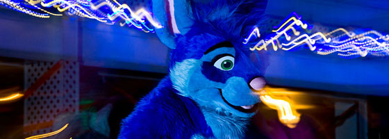

Thank You!
Thank you all for making Furloween a success for the 13th (14th?) straight year! We were very happy with the turnout and so honored to have each and every attending furball join us! A special thanks to all staff and volunteers; we couldn't have done it without you!
Furloween will reappear on October 19th, 2013! Visit this site in late September 2013 to register. Our next mascot will be a hyena!
Dinner, Dance, Party!
October 27th, 2012 • 6pm - 2am • Orlando Elk's Lodge • $30
Furloween has simple goals: to bring together furries and friends of the southeast for a fun weekend; to have a good time in a relaxing enviroment; to renew old friendships, create new ones, and break down the walls we build up around ourselves over time. Halloween is a reminder to us that life is too short to fear the things that go bump in the night. Even werewolves need hugs!
Everyone needs to have ID available and if you are under age, to get your parent's permission and have the Parental Consent Form signed.
